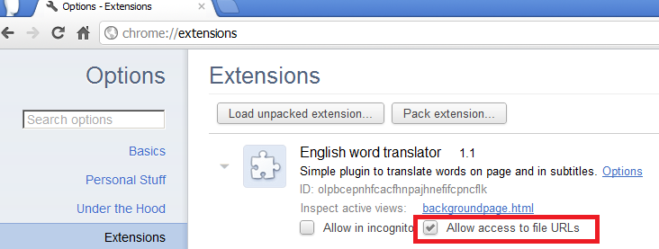
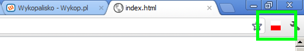

Szybka nauka słówek użytych w filmach/artykułach cz2.
Dwa lata temu na wykopie pokazała się pierwsza wersja aplikacji, do szybkiej nauki słówek. Padło wtedy wiele pomysłów,
jak należałoby udoskonalić ten pomysł. W taki oto sposób powstał plugin do Chrome, który w sposób łatwy i przyjemy tłumaczy
słówka zawarte w angielskich napisach oraz artykułach. Poniżej screen z filmu:

Instrukcja obsługi:
Po zainstalowaniu wtyczki musimy jeszcze w ustawieniach zaznaczyc, że chcemy aby wtyczka miala dostep do naych lokalnych plików. Jest to niezbędne jeżeli chcemy tłumaczyc napisy z naszego dysku.

Następnie należy wczytać stronę lub napisy, które chcemy przetłumaczyć i kliknąć w biało czerwoną flagę:

Program automatycznie przetłumaczy wybrane słowa. Następnie przetłumaczony tekst kopiujemy do pliku i używamy go w naszym ulubionym serialu/filmie.
Jak to dziala:
Algorytm w kolejnych krokach:
1. Napisy/Zawartosc strony przesyłana jest na serwer.
2. Odfiltrowywane są słowa ze stop listy: Stop listy
3. W zależności od ustawien wtyczki odfiltrowywane są słowa spoza zakresu częstotliwośi wystepowania w języku
angielskim.
Ten punkt jest dosyc problematyczny. Dlatego postaram sie go rozjaśnić. Posiadam baze angielskich słów wraz z nadaną
częstotliwościa wystepowania w języku angielskim. Np.:
listen - 92
gatekeeper - 72
way - 97
talk - 95
Ustawienia sa MIN = 5, MAX = 90. Minimalny zakres wynosi: 0, a maksymalny 100.
Dalej przechodzi tylko słowo "gatekeeper", ponieważ miesci się w zakresie częstotliwości, który jest ustawieniach
wtyczki.
4. Słowa są tłumaczona na język polski.
5. Do napisów wstawiane są polskie słowa, tak jak na screenshocie powyżej.
Download:
Wersja 1.1: English translator
Pomysly na udoskonalenie pluginu w przyszłości:
- dodanie phrasal verbs oraz idiomów.
- zapamiętywanie słówek.
- własna lista wykluczeń(exclude list).
- learning mode - nauka słówek przed filmem/artykułem.
- interaktywne uczenie: wysylanie smsem/mailem partii raz na dzien.
- subtitles dla zaawansowanych - czyli wymazujemy cały tekst i na dole pokazuje sie tylko słowo ktorego nie znamy wraz z tlumaczeniem.
- nowe jezyki: niemiecki, hiszpanski